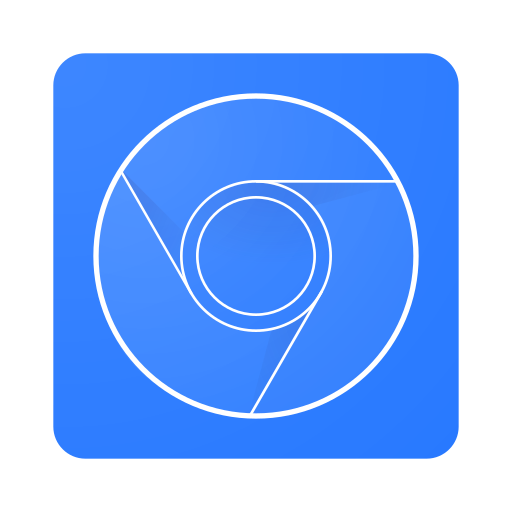
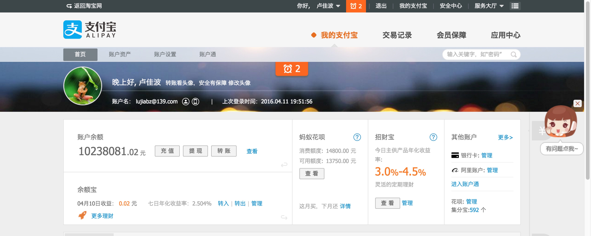
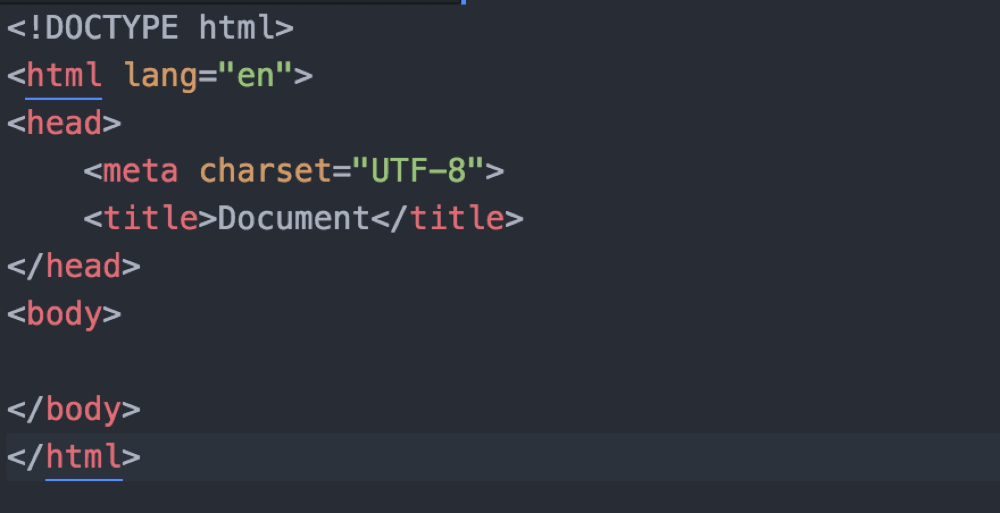
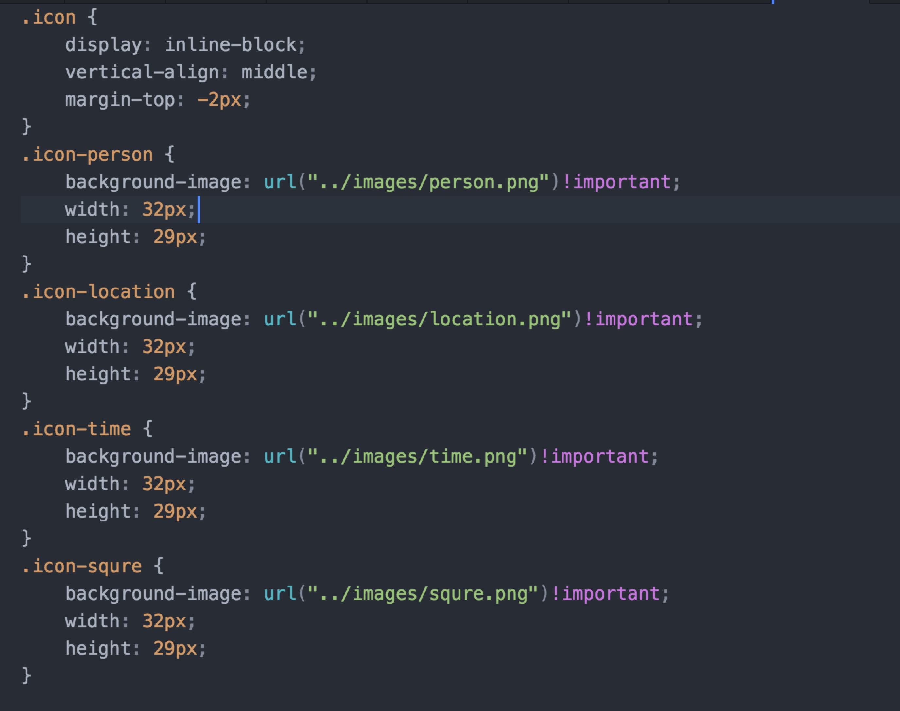
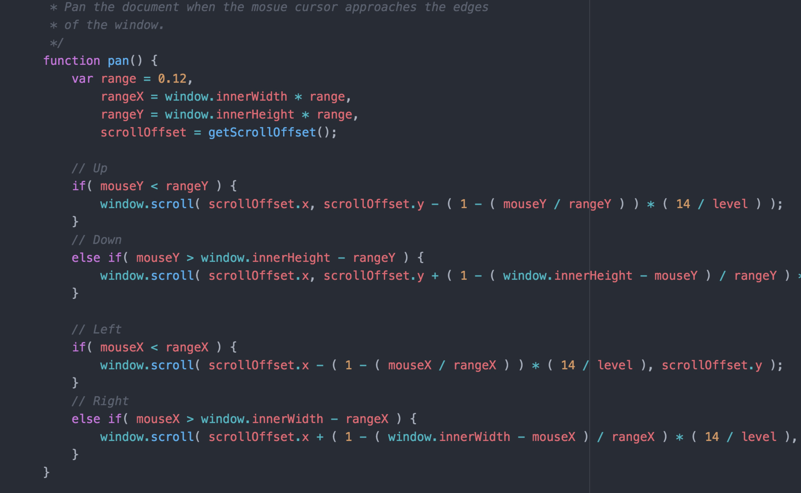
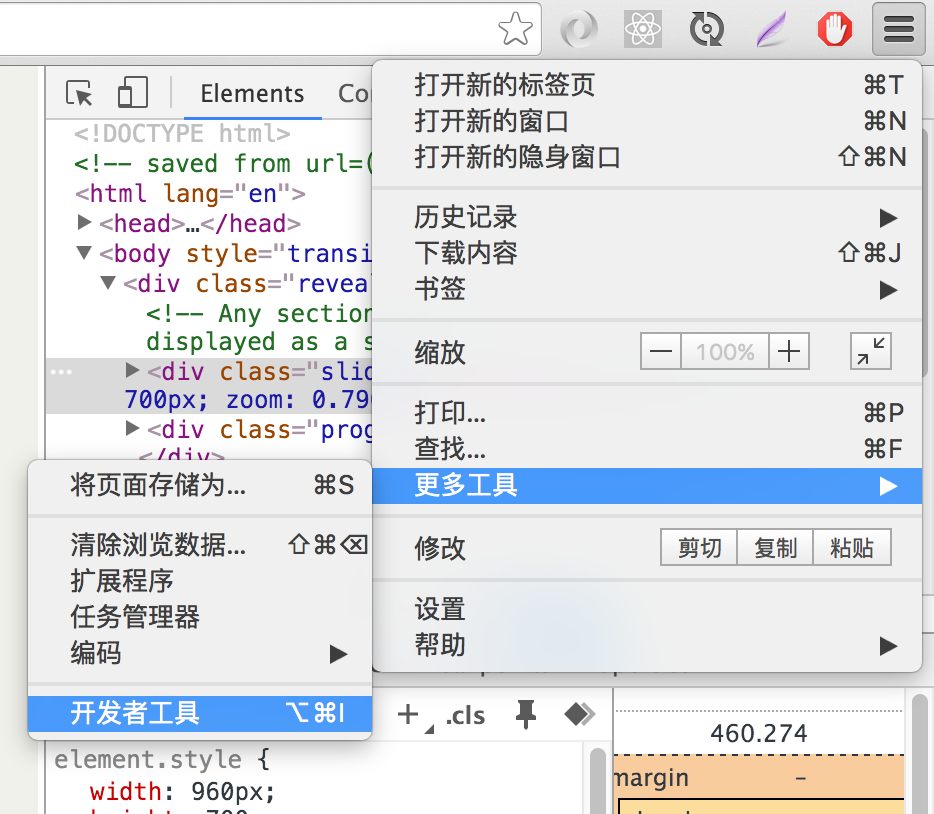
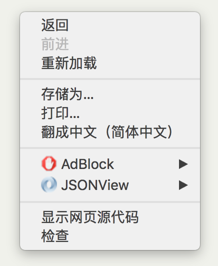

Chrome DevTools
卢佳波 前端开发
开发者工具
三大疑问
这是什么？
这有什么用？
这怎么用？
这是什么？
这有什么用？

这怎么用？
调查
需要知道 html , css , javascript 吗？
当然需要
需要知道很多吗？
可以不需要
三者的关系
html
--->
骨架
css
--->
皮肤
javascript
--->
神经系统
html

css

javascript

召唤
Chrome DevTools


Ctrl
+
Shift
+
I
or F12 (Windows)
Cmd
+
Opt
+
I
(Mac)
COOL!
就是为了玩
整个页面都是你的
增加 contenteditable 属性
使用css滤镜处理某些区域, -webkit-filter:blur(1px);
看看有多 ”色”
图片，视频，音乐 统统都到碗里来
妈妈再也不用担心我的缓存
动画调试
仿佛拥有了好多设备
chrome://flags/
FAQ
THANK YOU